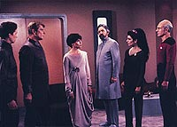
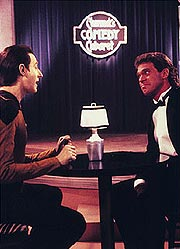
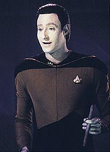
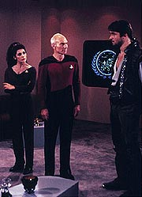
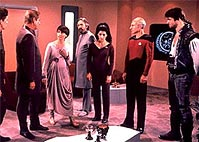

|
MANCHETE
DO EPISÓDIO
Personagem
bonzinho à la Harry Mudd
dá o ar da graça em A Nova Geração
Episódio
anterior | Próximo
episódio
Sinopse:
Data Estelar: 42402.7.
Enquanto viaja pelo sistema Omega Sagitta, a Enterprise ajuda um
cargueiro com problemas e recebe a bordo seu único ocupante, o
capitão Okona. Uma vez na nave, o bonito e malandro Okona encanta a
tripulação --e particularmente as mulheres-- com sua sagacidade e
seus modos travessos. Data, entretanto, é incapaz de entendar as
piadas de Okona e procura Guinan e o holodeck para ter lições
sobre humor humano.
 Enquanto
isso, duas pequenas naves interplanetárias travam seus lasers na
Enterprise, exigindo a rendição de Okona. Primeiro, Devin acusa-o
de ter engravidado sua filha, Yanar. Em seguida, Kushell, com seu
filho, Benzan, a seu lado, acusa o capitão de ter roubado a valiosa
Jóia de Thesia, orgulho de seu planeta.
Sabendo que libertar Okona para Debin ou Kushell causaria a guerra
entre seus respectivos mundos, Picard concorda em ajudar Okona a
"fugir" da Enterprise. Entretanto, uma discussão com
Wesley convence o capitão do cargueiro a mudar de idéia e se
entregar.
 Quando
todos os envolvidos no impasse são levados a bordo da Enterprise
para discutir a questão, Okona diz que aceitará se casar com Yanar,
o que provoca a ira de Benzan, que confessa que é o pai da criança
que Yanar carrega e que pegou a jóia para dar de presente à criança
em seu pedido de casamento. Okona também admite que andou atuando
como intermediário do casal, cujas famílias se confrontam há
anos. Uma vez que tudo é esclarecido, Yanar concorda em se casar
com Benzan.
Com a polêmica resolvida, Data retorna ao holodeck para tentar
algumas das piadas que ele aprendeu com uma platéia. Após uma
tentativa decepcionante, Data chega à triste conclusão de que ele
é incapaz de ser engraçado. Mas quando a tripulação dá adeus a
Okona, Data é pego de surpresa por uma pergunta de Okona e dá uma
resposta que deixa todos na ponte rindo.
Comentários:
"The
Outrageous Okona" é um típido episódio ...da Série
Clássica. Vários elementos apresentados aqui já foram
utilizados durante a produção da série original. O mais notável
deles, como não poderia deixar de ser, é o próprio capitão Okona,
que mais parece uma versão anos 80 de Harry Mudd.
 A
diferença é que, ao contrário de Mudd, Okona apenas parece ser um
trambiqueiro, mas no final se mostra uma pessoa com nobreza de caráter
e de intenções, apesar de seu jeito debochado e desinibido.
Infelizmente, mesmo com todas as semelhanças, o gênio se recusou a
entrar na garrafa novamente, e Okona não chega nem perto do carisma
do velho algoz do capitão Kirk.
Por consequência, como o episódio é inteiro centrado na figura de
Okona, não vai surpreender ninguém se dissermos que acabou
faltando muito para que este segmento pudesse estar entre as
melhores horas da temporada. Embora o enredo esteja bem amarradinho,
e seja coerente durante todo o tempo, falta um pouco de senso de
importância a tudo isso. Em nenhum momento parece que a Enterprise
está vivendo algum impasse ou situação de tensão.
O carisma duvidoso de Okona acaba prejudicando a vida dos próprios
tripulantes da Enterprise. Eles reagem ao capitão do cargueiro como
se fosse um astro de rock, e o telespectador não consegue nem
passar perto de ter essa sensação. Trocando em miúdos, para a
audiência, parece que os personagens estão todos bobos de admirar
aquele sujeito.
 Isso
fica mais reforçado ainda quando vemos o fã número um de Okona a
bordo da Enterprise --Wesley Crusher. Okona é simpático, na melhor
das hipóteses, mas não é nada do que Wil Wheaton quer nos fazer
crer com sua atuação como o filho da boa doutora. O traço mais
interessante de Okona talvez seja o que nós percebemos sem precisar
que Wesley ou qualquer outro personagem nos conte. É curioso, por
exemplo, reparar que o visitante está sempre dando um amasso em uma
tripulante diferente da Enterprise, a começar pela oficial do
transporte (Teri Hatcher),.
A porção do episódio voltada para o humor é até engraçadinha,
principalmente na interação entre o Cômico, gerado pelo holodeck,
e Data. Guinan, embora participe em grande medida do episódio,
ainda não oferece diálogos tão inspirados e afiados como os que
viriam mais tarde. Talvez esta seja uma das mais fracas participações
da personagem em toda a série.
 Após
toda a confusão de Okona ser desfeita, busca-se um desfecho para a
"crise de humor" de Data. A solução, fazendo-o gerar uma
piada involuntária na ponte, além de sem graça, é um clichê que
já era irritante nos anos 60, quando o episódio terminava com
todos os personagens rindo. Felizmente a cena não é realizada
dessa forma, mas esse "quase-desfecho" nos faz questionar
a capacidade da produção de A Nova Geração de abandonar
os velhos hábitos da época da Série Clássica e começar a
pensar com uma cabeça mais anos 80 e 90. Felizmente, em alguns episódios
do segundo ano, e totalmente a partir do terceiro, a equipe pega a mão
e a série decola como um produto genuinamente novo, e não um
remake do programa original.
Citações:
Okona - "Life is
like loading twice your cargo weigth into your space craft. If it's
canaries and you can keep half of them flying all of the time... you
are all right."
("A vida é como carregar o dobro do peso de sua carga em sua
nave. Se são canários e você consegue manter metade deles voando
o tempo todo... você está bem.")
Trivia:
 William O. Campbell, que aqui interpreta Okona, foi cotado para o
papel de Riker quando a produção da Nova Geração estava
começando a procurar os atores para a série. Três anos após este
episódio, Campbell fez o papel principal no filme
"Rocketeer".
William O. Campbell, que aqui interpreta Okona, foi cotado para o
papel de Riker quando a produção da Nova Geração estava
começando a procurar os atores para a série. Três anos após este
episódio, Campbell fez o papel principal no filme
"Rocketeer".
O comediante que aparece no holodeck com Data foi interpretado por
Joe Piscopo, um comediante na vida real, tendo inclusive trabalhado
em "Saturday Night Live" por vários anos. O lendário
Jerry Lewis foi sondado para fazer esse papel, mas acabou não
acertando com a produção.
Teri Hatcher, a Lois Lane da série "Lois & Clark: The New
Adventures of Superman", aparece aqui como a tenente B.G.
Robinson.
Ficha
técnica:
História de Les Menchen, Lance
Dickson e David Landsberg
Roteiro de Burton Armus
Direção de Robert Becker
Exibido em 12/12/1988
Produção: 030
Elenco:
Patrick Stewart como
Jean-Luc Picard
Jonathan Frakes como William Thomas Riker
Brent Spiner como Data
LeVar Burton como Geordi La Forge
Michael Dorn como Worf
Marina Sirtis como Deanna Troi
Wil Wheaton como Wesley Crusher
Elenco convidado:
Diana Muldaur como
Katherine "Kate" Pulaski
William O. Campbell como capitão Thadium Okona
Douglas Rowe como Debin
Albert Stratton como Kushell
Rosalind Ingledew como Yanar
Kieran Mulroney como Benzan
Teri Hatcher como tenente B.G. Robinson
Joe Piscopo como o comediante
Whoopi Goldberg como Guinan
Episódio
anterior | Próximo
episódio
|